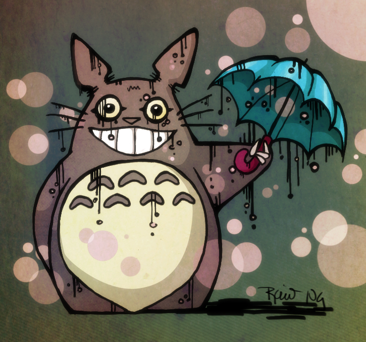

a project created by an art enthusiast for like minded people
There is an infinite amount of content on the web and it can be overwhelming to find content that you enjoy. This is especially true of artwork. While there are many online mediums for sharing artwork there are an endless amount of art and artists to discover. Additionally, it is typical that the most popular artists have greater exposure. Therefore, I created artumbl.r to attempt to solve these problems by helping lesser known artists gain more exposure and provide an immersive enjoyable experience that allows art entusiasts to find new artists to follow.
About Me
My Name is Rocio Ng and I recieved my PhD in Ecology and Evolution at Stony Brook University. My research involved understanding how pigmentation traits are evolving in natural populations of the fruit fly Drosophila melanogaster. While completing my work I found out that I love to solve problems, code, and play with data. If you would like to know more please check out my LinkedIn site.
